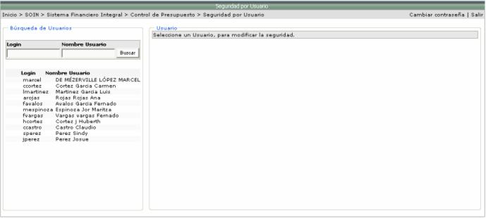
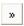
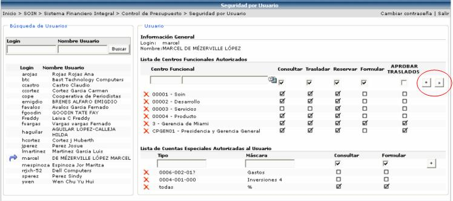
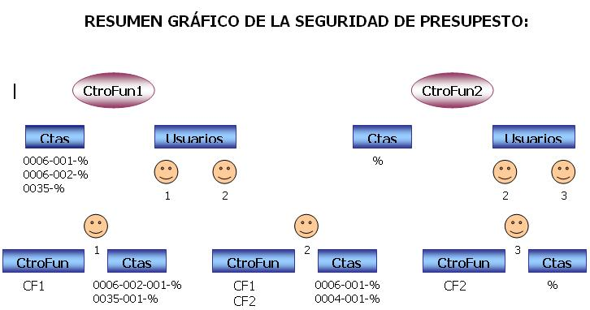

En esta opción se les asigna a los usuarios, los centros funcionales y las cuentas a las que puede realizarle movimientos. Estos movimientos pueden ser Consultar, Trasladar, Reservar o Formular Presupuesto. Además se le puede definir, el o los centros funcionales donde será el encargado de aprobar los traslados.
Lo que se tiene que hacer es seleccionar el usuario al que se le quiere asociar la seguridad:

Una vez seleccionado el
usuario se le agrega la seguridad. En la sección de Lista
de Centros Funcionales Autorizados se deben de agregar los centros,
a los que se le van a registrar movimientos por usuario. Luego se deben
de asignar los movimientos a los que se tendrá permiso de realizar, activando
los checks de: Consultar o Trasladar o Reservar o Formular y por último
presionar el botón  .
.
También existe la opción de poder agregar una jerarquía completa de centros funcionales. Esto se realiza de la siguiente manera: se selecciona de la lista de Centros Funcionales, el centro funcional deseado y se presiona el botón

. Si el centro funcional que se escogió tiene dependencias, estas se agregaran automáticamente al presionar el botón . Si en el catálogo de centros funcionales se realiza algún cambio de jerarquía al centro funcional que se agrego de esta manera, aquí se vera reflejado automáticamente dicho cambio.
Igualmente para agregar
cuentas especiales autorizadas se debe de llenar la información necesaria
(tipo, máscara, consultar, formular) y presionar el botón  . En el campo TIPO
se puede poner el nombre de la cuenta o alguna información que la identifique.
En el campo MÁSCARA, se pone la
cuenta o si es un grupo muy grande de cuentas y no se quieren ingresar
de una en una, se pueden usar comodines para esto. Este campo filtra cuentas
que coincidan con la máscara especificada en él.
. En el campo TIPO
se puede poner el nombre de la cuenta o alguna información que la identifique.
En el campo MÁSCARA, se pone la
cuenta o si es un grupo muy grande de cuentas y no se quieren ingresar
de una en una, se pueden usar comodines para esto. Este campo filtra cuentas
que coincidan con la máscara especificada en él.
Los comodines que se pueden utilizar son:
1) _ (guión bajo): significa cualquier carácter de tamaño 1
Ejemplo: 0006-_ _ _ -35
2) % (porcentaje): significa cualquier carácter de cualquier tamaño
Ejemplo: 0006-_ _ _ -35%
% (todas las cuentas)

Pero si lo que se desea es eliminar una línea se debe de presionar el icono que se encuentra la izquierda de la línea deseada. Y para modificar la información se hace click encima del registro deseado.
